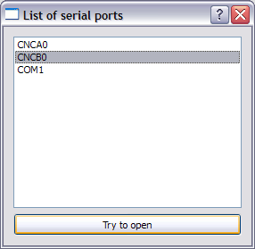

There are several methods for getting a list of all serial (COM) ports on a Windows machine. Here I want to focus on one that seems to work very well on the computers I tried, and incidentally it's also the simplest to implement.
Digging into the registry
The list of serial ports on the machine appears under the HARDWARE\\DEVICEMAP\\SERIALCOMM key in the Windows registry. You can use the regedit tool to reach this key and make sure the serial ports defined on your machine are there (including the virtual ports created with com0com or another emulator).
Reading the registry in Python is very simple using the _winreg module:
import _winreg as winreg
import itertools
def enumerate_serial_ports():
""" Uses the Win32 registry to return an
iterator of serial (COM) ports
existing on this computer.
"""
path = 'HARDWARE\\DEVICEMAP\\SERIALCOMM'
try:
key = winreg.OpenKey(winreg.HKEY_LOCAL_MACHINE, path)
except WindowsError:
raise IterationError
for i in itertools.count():
try:
val = winreg.EnumValue(key, i)
yield str(val[1])
except EnvironmentError:
break
There are other methods for listing the serial ports, but for the time being I'll stick to this one.
Port names
As I've mentioned in the last post, Windows requires some port names to appear in a "full" form prepended by several special characters. AFAIK these are all the ports except COM[1..9]. Here's a simple function for generating a "full name" suitable for passing to PySerial:
import re
def full_port_name(portname):
""" Given a port-name (of the form COM7,
COM12, CNCA0, etc.) returns a full
name suitable for opening with the
Serial class.
"""
m = re.match('^COM(\d+)$', portname)
if m and int(m.group(1)) < 10:
return portname
return '\\\\.\\' + portname
While the "simple" name returned by enumerate_serial_ports is readable and suitable for display to the user, only the full name can be passed to serial.Serial for opening the port.
A simple GUI for listing the ports
Finally, I've coded a simple PyQt based GUI for listing the available ports and allowing the user to try and open them (even if the port appears as available on a computer, it may be in use by another program - so opening it will fail).
Here's the code. It assumes that the enumerate_serial_ports and full_port_name functions were placed in a module called serialutils somewhere on the Python path.
Also, note how the simple port names from enumerate_serial_ports are shown in the list widget, and when trying to actually open the port, the program converts them into full names "under the hood". This is a common practice in serial-port programming.
"""
Lists the serial ports available on the
(Windows) computer.
Eli Bendersky (eliben@gmail.com)
License: this code is in the public domain
"""
import sys
from PyQt4.QtCore import *
from PyQt4.QtGui import *
import serial
from serial.serialutil import SerialException
from serialutils import full_port_name, enumerate_serial_ports
class ListPortsDialog(QDialog):
def __init__(self, parent=None):
super(ListPortsDialog, self).__init__(parent)
self.setWindowTitle('List of serial ports')
self.ports_list = QListWidget()
self.tryopen_button = QPushButton('Try to open')
self.connect(self.tryopen_button, SIGNAL('clicked()'),
self.on_tryopen)
layout = QVBoxLayout()
layout.addWidget(self.ports_list)
layout.addWidget(self.tryopen_button)
self.setLayout(layout)
self.fill_ports_list()
def on_tryopen(self):
cur_item = self.ports_list.currentItem()
if cur_item is not None:
fullname = full_port_name(str(cur_item.text()))
try:
ser = serial.Serial(fullname, 38400)
ser.close()
QMessageBox.information(self, 'Success',
'Opened %s successfully' % cur_item.text())
except SerialException, e:
QMessageBox.critical(self, 'Failure',
'Failed to open %s:\n%s' % (
cur_item.text(), e))
def fill_ports_list(self):
for portname in enumerate_serial_ports():
self.ports_list.addItem(portname)
if __name__ == "__main__":
app = QApplication(sys.argv)
form = ListPortsDialog()
form.show()
app.exec_()
This runs with ActivePython 2.5.2, PyQt 4.4.3, and the latest PySerial.
Some utility code for this post can be found in this directory.